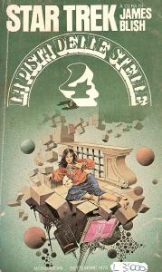

Star Trek 4 |
|  |
| AUT | James Blish |
| EDI | Bantam Books, 1971 |
| ISBN | 0-553-02172 0-553-10812-3 |
| Edizione italiana | La pista delle stelle 4 |
| TRA | Rossella Sanità |
| PAG | 158 |
| EDI | Mondadori, 1978 |
Novelization di: All Our Yesterdays,
The Devil in the Dark,
Journey to Babel,
The Menagerie,
The Enterprise Incident,
A Piece of the Action.